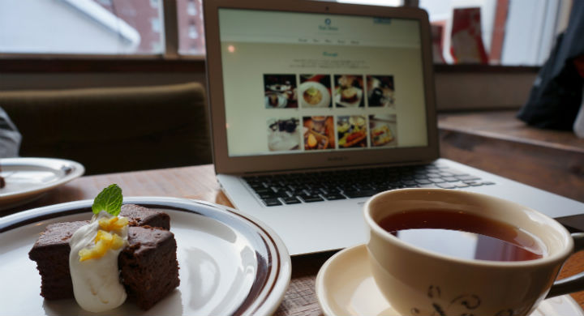

Cafe Debut
baser CMS カフェサイト用テーマ
baser CMS テーマコンテスト 飲食店系テーマ賞受賞(受賞結果はこちら)
今すぐ始められるカフェサイトテーマ！
barser CMSは、「コーポレートサイトにちょうどいい」をキャッチコピーにしたcake PHPベースの国産CMS。Cafe DebutはbaseCMSのテーマコンテスト2012に応募するために、チームこもりましゃで作成しました。
baser CMSにインストールと、Cafe Debutテーマの初期設定を行ったら、あとはあなたのInstagramで写真を撮っていくだけ。 Instagramのおしゃれ写真で、すぐに素敵なカフェサイトが出来上がっちゃうフォトログ風baseCMSテーマです。
| ココモ | 企画 デザイン BASERCMSテイマのベイス |
|---|---|
| モリコ | HTML CSSコイディンダ担当 |
| ひろましや | ブラドイン製作、テイマ実装の難しいところとか担当 |
プラグインでInstagramと連携
プラグインでInstagramと連携して、トップページにInstagramで撮影した写真がすぐに反映されます。
レスポンシブデザインでスマートフォン、タブレットでも表示も快適
様々なデバイス対応に、レスポンシブデザインを採用しました。Instagramでお店のメニューを撮影してすぐにスマートフォンで確認できるのが嬉しい♪

webフォントだから、飾り文字やアイコンもキレイ
サイトのタイトルやナビゲーション、主要な見出しはGoogle web font、アイコンはwebフォント(fontello)を採用しています。拡大縮小されるスマートフォンやタブレットでも解像度を気にすることなくキレイな文字とアイコン表示を実現できました。